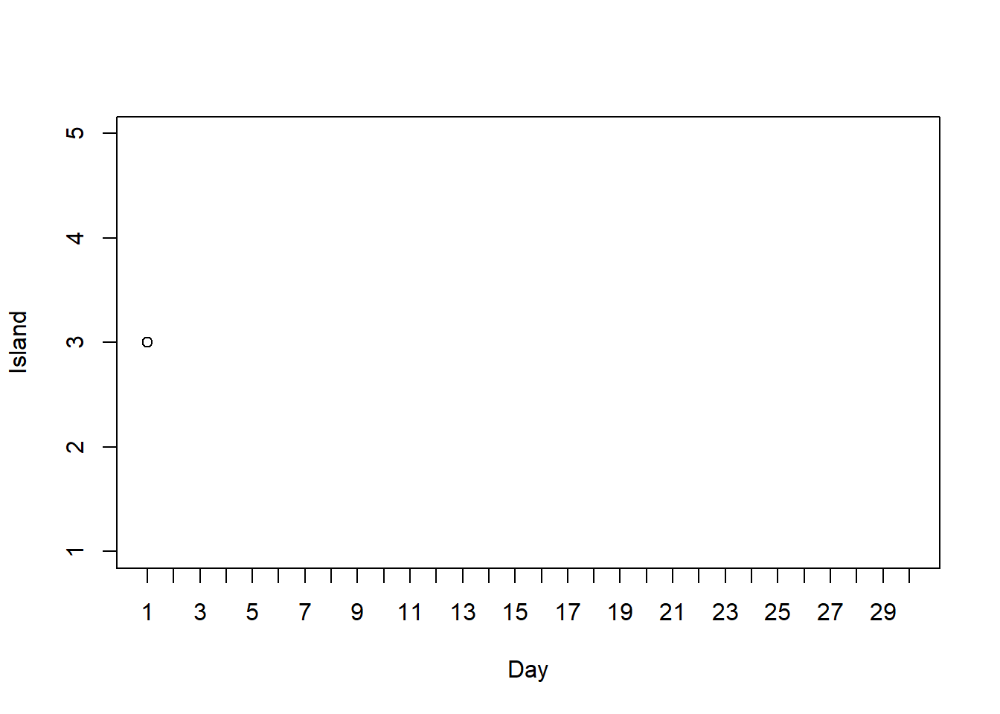
21 Introduction to Markov Chain Monte Carlo (MCMC) Simulation
Markov chain Monte Carlo (MCMC) methods provide powerful and widely applicable algorithms for simulating from probability distributions, including complex and high-dimensional posterior distributions.
Example 21.1 A politician campaigns on a long east-west chain of islands1. At the end of each day she decides to stay on her current island, move to the island to the east, or move to the island to the west. Her goal is to plan her daily island visits proportional to the islands’ populations, so that she spends the most days on the most populated island, and proportionally fewer days on less populated islands. Unfortunately, (1) she doesn’t know how many islands there are, and (2) she doesn’t know the population of each island. However, when she visits an island she can determine its population. And she can send a scout to the east/west adjacent islands to determine their population before visiting. How can the politician achieve her goal of visiting islands proportionally to their population in the long run?
Suppose that every day, the politician makes her travel plans according to the following algorithm.
- She flips a fair coin to propose travel to the island to the east (heads) or west (tails). (If there is no island to the east/west, treat it as an island with population zero below.)
- If the proposed island has a population greater than that of the current island, then she travels to the proposed island.
- If the proposed island has a population less than that of the current island, then:
- She computes \(a\), the ratio of the population of the proposed island to the current island.
- She travels to the proposed island with probability \(a\),
- And with probability \(1-a\) she spends another day on the current island.
Suppose that, unbeknownst to the politician, are 5 islands, labeled \(1, \ldots, 5\) from west to east, and that island \(\theta\) has population \(\theta\) (thousand). (Remember, the politician would not know this information.)
Suppose she starts on island \(\theta=3\) on day 1.
What are her possible locations on day 2? What are the relative populations of these locations?
For each of the possible day 2 locations, what is the probability that she visits the location on day 2?
How could you use a coin and a spinner to simulate by hand the politician’s movements over a number of days? Conduct the simulation and plot the path of her movements.
Construct by hand a plot displaying the simulated relative frequencies of days in each of the 5 islands.
Now use code to simulate the politician’s movements for many days. Plot the island path.
Plot the simulated relative frequencies of days in each of the 5 islands.
Recall the politician’s goal of visiting each island in proportion to its population. Given her goal, what should the plot from the previous part look like? Does the algorithm result in a reasonable approximation?
Is the next island visited dependent on the current island?
Is the next island visited dependent on how she got to the current island? That is, given the current island is her next island independent of her past history of previous movements?
- The goal of a Markov chain Monte Carlo method is to simulate from a probability distribution of interest. In Bayesian contexts, the distribution of interest will usually be the posterior distribution of parameters given data.
- A Markov chain is a random process that exhibits a special “one-step” dependence structure. Namely, conditional on the most recent value, any future value is conditionally independent of any past values.
- The idea of MCMC is to build a Markov chain whose long run distribution — that is, the distribution of state visits after a large number of “steps” — is the probability distribution of interest.
- Then we can indirectly simulate a representative sample from the probability distribution of interest, and use the simulated values to approximate the distribution and its characteristics, by running an appropriate Markov chain for a sufficiently large number of steps.
- The Markov chain does not need to be fully specified in advance, and is often constructed “as you go” via an algorithm like a “modified random walk”.
- Each step of the Markov chain typically involves
- A proposal for the next state, which is generated according to some known probability distribution or mechanism,
- A decision of whether or to accept the proposal. The decision usually involves probability
- With probability \(a\), accept the proposal and step to the next state
- With probability \(1-a\), reject the proposal and remain in the current state for the next step.
Example 21.2 Continuing Example 21.1. Suppose again that the number of islands and their populations is unknown, but that the population for island \(\theta\) is proportional to \(\theta^2 e^{-0.5\theta}\), where the islands are labeled from west to east 1, 2, \(\ldots\). That is, when she or the scout visits island \(\theta\) they only determine that the population is \(c\theta^2 e^{-0.5\theta}\) for some value of \(c\), but they do not learn what \(c\) is For example, when they visit island \(\theta = 1\) they learn its population is \(c(1^2)e^{-0.5(1)} \approx 0.606c\), when they visit island \(\theta = 2\) they learn its population is \(c(2^2)e^{-0.5(2)} \approx 1.472c\), etc, but they never learn what \(c\) is.
They’ll attempt the same algorithm as in Example 21.1. Suppose she starts on island \(\theta=3\) on day 1.
What are her possible locations on day 2? What are the relative populations of these locations?
For each of the possible day 2 locations, what is the probability that she visits the location on day 2?
Can she implement her algorithm in this case? That is, is it sufficient to learn that the populations are in proportion to \(\theta^2 e^{-0.5\theta}\) without knowing the actual populations? In particular, is there enough information to compute the “acceptance probability” \(a\)?
Now use code to simulate the politician’s movements for many days. Plot the island path.
Plot the simulated relative frequencies of days in each of the islands.
Recall the politician’s goal of visiting each island in proportion to its population. Given her goal, what should the plot from the previous part look like? Does the algorithm result in a reasonable approximation?
Why doesn’t the politician just always travel to or stay on the island with the larger population?
What would happen if there were an island among the east-west chain with population 0? (For example, suppose there are 10 islands, she starts on island 1, and island 5 has population 0.) How could she modify her algorithm to address this issue?
- The goal of an MCMC method is to simulate \(\theta\) values from a probability distribution \(\pi(\theta)\).
- One commonly used MCMC method is the Metropolis algorithm2
- To generate \(\theta_\text{new}\) given \(\theta_\text{current}\):
- Given the current value \(\theta_\text{current}\) propose a new value \(\theta_{\text{proposed}}\) according to the proposal ( or “jumping”) distribution \(j\). \[ j(\theta_\text{current}\to \theta_{\text{proposed}}) \] is the conditional density that \(\theta_{\text{proposed}}\) is proposed as the next state given that \(\theta_{\text{current}}\) is the current state
- Compute the acceptance probability as the ratio of target density at the current and proposed states \[ a(\theta_\text{current}\to \theta_{\text{proposed}}) = \min\left(1,\, \frac{\pi(\theta_{\text{proposed}})}{\pi(\theta_{\text{current}})}\right) \]
- Accept the proposal with probability \(a(\theta_\text{current}\to \theta_{\text{proposed}})\) and set \(\theta_{\text{new}} = \theta_{\text{proposed}}\). With probability \(1-a(\theta_\text{current}\to \theta_{\text{proposed}})\) reject the proposal and set \(\theta_\text{new} = \theta_{\text{current}}\).
- If \(\pi(\theta_{\text{proposed}})\ge \pi(\theta_{\text{current}})\) then the proposal will be accepted with probability 1.
- Otherwise, there is a positive probability or rejecting the proposal and remaining in the current state. But this still counts as a “step” of the MC.
- The Metropolis-Hastings algorithm works for any proposal distribution which allows for eventual access to all possible values of \(\theta\). That is, if we run the algorithm long enough then the distribution of the simulated values of \(\theta\) will approximate the target distribution \(\pi(\theta)\). Thus we can choose a proposal distribution that is easy to simulate from.
- However, in practice the choice of proposal distribution is extremely important — especially when simulating from high dimensional distributions — because it determines how fast the MC converges to its long run distribution.
- There are a wide variety of MCMC methods and their extensions that strive for computational efficiency by making “smarter” proposals. These algorithms include Gibbs sampling, Hamiltonian Monte Carlo (HMC), and No U-Turn Sampling (NUTS). We won’t go into the details of the many different methods available. Regardless of the details, all MCMC methods are based on the two core principles of proposal and acceptance.
Example 21.3 Suppose we wish to estimate \(\theta\), the proportion of Cal Poly students who have read a non-school related book in 2023. Assume a Beta(1, 3) prior distribution for \(\theta\). In a sample of 25 Cal Poly students, 4 have read a book in 2023. We’ll use MCMC to approximate the posterior distribution of \(\theta\).
(Note: this is a situation where we can work out the posterior analytically, so we don’t need MCMC. But this example allows us to see how MCMC is implemented in a relatively simple situation where we can check if the algorithm works.)
Without actually computing the posterior distribution, what can we say about it based on the assumptions of the model?
What are the possible “states” that we want our Markov chain to visit?
Given a current state \(\theta_\text{current}\) how could we propose a new value \(\theta_{\text{proposed}}\), using a continuous analog of “random walk to neighboring states”?
How would we decide whether to accept the proposed move? How would we compute the probability of accepting the proposed move?
Suppose the current state is \(\theta_\text{current}=0.20\) and the proposed state is \(\theta_\text{proposed}=0.15\). Compute the probability of accepting this proposal.
Suppose the current state is \(\theta_\text{current}=0.20\) and the proposed state is \(\theta_\text{proposed}=0.25\). Compute the probability of accepting this proposal.
Use code to run the algorithm and simulate many values of \(\theta\). Plot the simulated values of \(\theta\) as a function of step (called a “trace plot”), and summarize the simulated values of \(\theta\) in a histogram.
What is the theoretical posterior distribution of \(\theta\)? Does the distribution of values of \(\theta\) simulated by the MCMC algorithm provide a reasonable approximation to the theoretical posterior distribution?
- We will most often use MCMC methods to simulate values from a posterior distribution \(\pi(\theta|y)\) of parameters \(\theta\) given data \(y\).
- The Metropolis (or Metropolis-Hastings algorithm) allows us to simulate from a posterior distribution without computing the posterior distribution.
- Recall that the inputs of a Bayesian model are: (1) the data \(y\); (2) the model for the data, \(f(y|\theta)\), which determines the likelihood; and (3) the prior distribution \(\pi(\theta)\) of parameters \(\theta\).
- The target posterior distribution satisfies \[ \pi(\theta |y) \propto f(y|\theta)\pi(\theta) \]
- Therefore, the acceptance probability of the Metropolis algorithm can be computed based on the form of the prior and likelihood alone \[ a(\theta_\text{current}\to \theta_{\text{proposed}}) = \min\left(1,\, \frac{\pi(\theta_{\text{proposed}}|y)}{\pi(\theta_{\text{current}}|y)}\right) = \min\left(1,\, \frac{f(y|\theta_{\text{proposed}})\pi(\theta_{\text{proposed}})}{f(y|\theta_{\text{current}})\pi(\theta_{\text{current}})}\right) \]
- Furthermore, the product of prior and likelihood only needs to be evaluated for the states the chain actual visits. This is especially helpful in high dimensional models with many parameters. (Recall that when there are many parameters, grid approximation becomes infeasible simply because there are too many rows in the grid to actually compute the product of prior likelihood for.)
- As the chain progresses, the algorithm fills in more and more of the relative posterior plausibilities; e.g., the current state is blank times more/less plausible than each of the states that preceded it.
Example 21.4 We have seen how to estimate a process probability \(p\) in a Binomial situation, but what if the number of trials is also random? For example, suppose we want to estimate both the average number of three point shots Steph Curry attempts per game (\(\mu\)) and the probability of success on a single attempt (\(p\)). Assume that
- Conditional on \(\mu\), the number of attempts in a game \(N\) has a Poisson(\(\mu\)) distribution
- Conditional on \(n\) and \(p\), the number of successful attempts in a game \(Y\) has a Binomial(\(n\), \(p\)) distribution.
- Conditional on \((\mu, p)\), the values of \((N, Y)\) are independent from game to game
For the prior distribution, assume
- \(\mu\) has a Gamma(10, 2) distribution
- \(p\) has a Beta(4, 6) distribution
- \(\mu\) and \(p\) are independent
In two recent games, Steph Curry made 4 out of 10 and 6 out of 11 attempts.
What is the likelihood function?
Without actually computing the posterior distribution, what can we say about it based on the assumptions of the model?
What are the possible “states” that we want our Markov chain to visit?
Given a current state \(\theta_\text{current}\) how could we propose a new value \(\theta_{\text{proposed}}\), using a continuous analog of “random walk to neighboring states”?
Suppose the current state is \(\theta_\text{current}=(8, 0.5)\) and the proposed state is \(\theta_\text{proposed}=(7.5, 0.55)\). Compute the probability of accepting this proposal.
Use code to run the algorithm. Plot the simulated values of \(\theta\) in a trace plot, and summarize them in approximate plots.
21.1 Notes
21.1.1 Island simulation: 5 islands, 30 days
# states
n_states = 5
theta = 1:n_states
# target distribution - proportional to
pi_theta = theta
n_steps = 30
theta_sim = rep(NA, n_steps)
theta_sim[1] = 3 # initialize
for (i in 2:n_steps){
current = theta_sim[i - 1]
# propose next state
proposed = sample(c(current + 1, current - 1), size = 1, prob = c(0.5, 0.5))
# compute acceptance probability
if (!(proposed %in% theta)){ # to correct for proposing moves outside of boundaries
proposed = current
}
a = min(1, pi_theta[proposed] / pi_theta[current])
# simulate the next state
theta_sim[i] = sample(c(proposed, current), size = 1, prob = c(a, 1-a))
}
# display the first few steps
data.frame(step = 1:n_steps, theta_sim) |> head(10) |> kbl() |> kable_styling() | step | theta_sim |
|---|---|
| 1 | 3 |
| 2 | 2 |
| 3 | 2 |
| 4 | 3 |
| 5 | 2 |
| 6 | 2 |
| 7 | 3 |
| 8 | 3 |
| 9 | 4 |
| 10 | 5 |
# trace plot
plot(1:n_steps, theta_sim, type = "o", ylim = range(theta), xlab = "Day", ylab = "Island")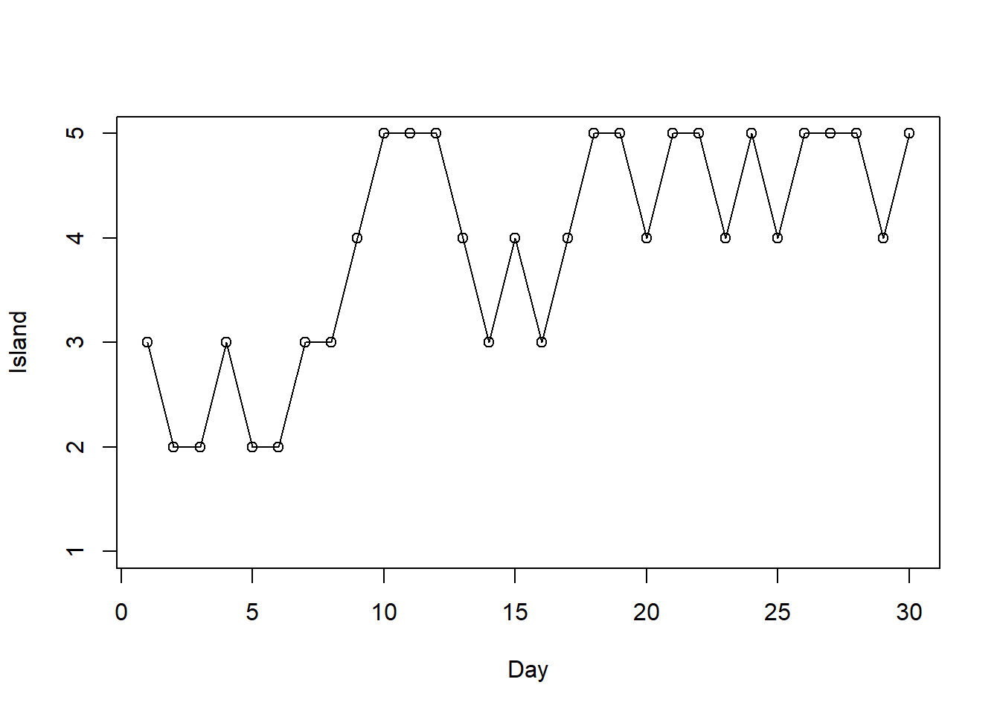
# simulated relative frequencies
plot(table(theta_sim) / n_steps, xlab = "Island", ylab = "Proportion of days")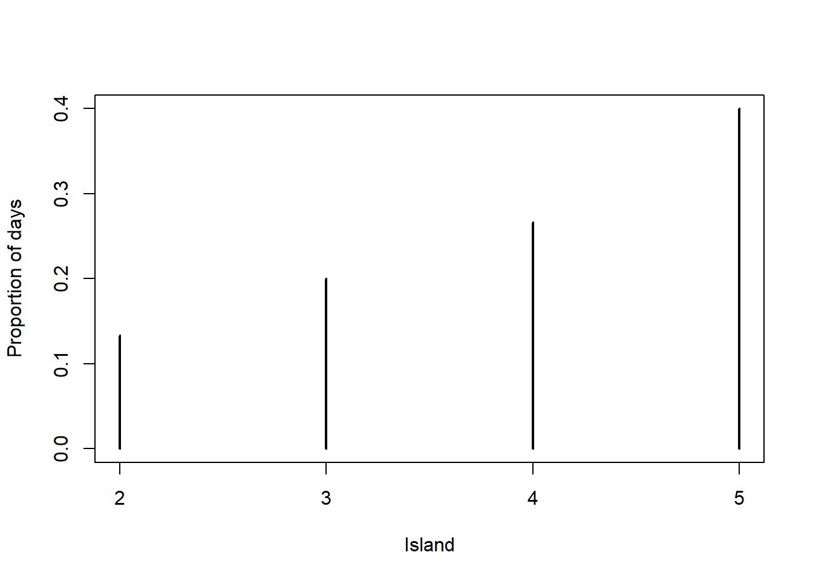
21.1.2 Island simulation: 5 islands, Many days
# states
n_states = 5
theta = 1:n_states
# target distribution - proportional to
pi_theta = theta
n_steps = 10000
theta_sim = rep(NA, n_steps)
theta_sim[1] = 3 # initialize
for (i in 2:n_steps){
current = theta_sim[i - 1]
# propose next state
proposed = sample(c(current + 1, current - 1), size = 1, prob = c(0.5, 0.5))
# compute acceptance probability
if (!(proposed %in% theta)){ # to correct for proposing moves outside of boundaries
proposed = current
}
a = min(1, pi_theta[proposed] / pi_theta[current])
# simulate the next state
theta_sim[i] = sample(c(proposed, current), size = 1, prob = c(a, 1-a))
}
# display the first few steps
data.frame(step = 1:n_steps, theta_sim) |> head(10) |> kbl() |> kable_styling() | step | theta_sim |
|---|---|
| 1 | 3 |
| 2 | 3 |
| 3 | 2 |
| 4 | 1 |
| 5 | 1 |
| 6 | 1 |
| 7 | 2 |
| 8 | 2 |
| 9 | 2 |
| 10 | 3 |
# trace plot
plot(1:n_steps, theta_sim, type = "l", ylim = range(theta), xlab = "Day", ylab = "Island")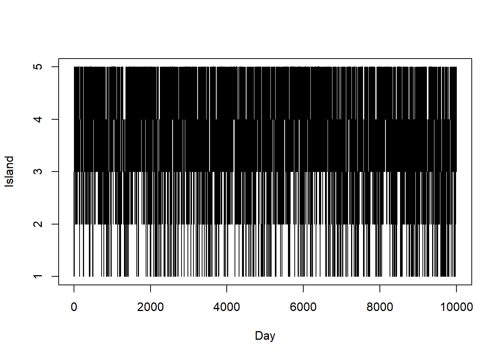
# simulated relative frequencies
plot(table(theta_sim) / n_steps, xlab = "Island", ylab = "Proportion of days")
# target distribution
points(theta, theta / 15, type = "o", col = bayes_col["posterior"])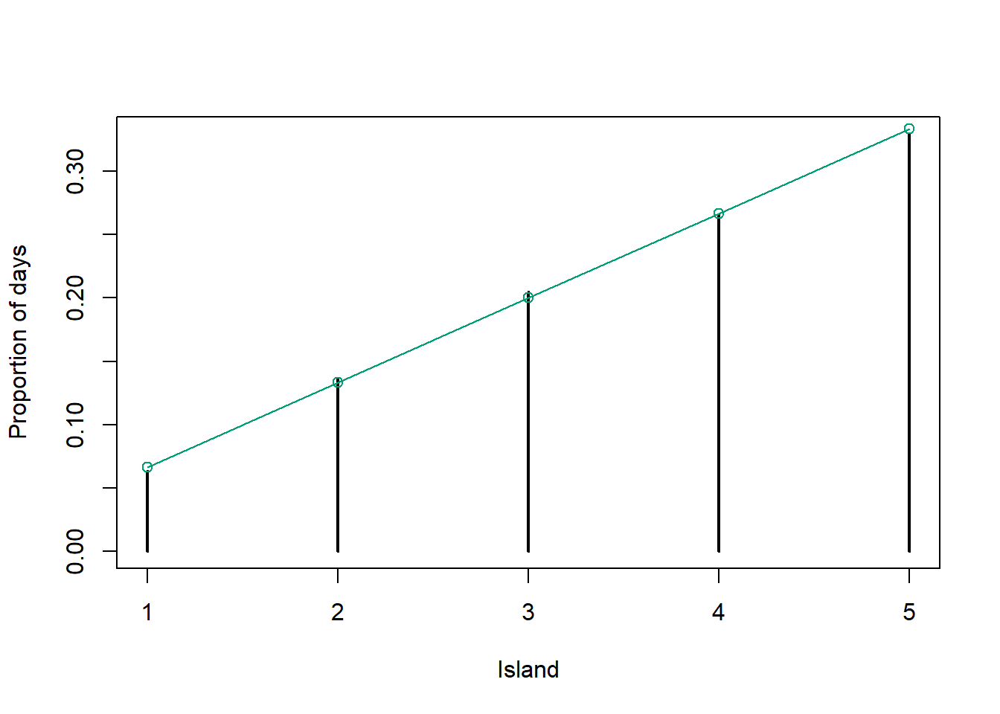
21.1.3 Island simulation: Many islands, Many days
# states
n_states = 30
theta = 1:n_states
# target distribution - proportional to
pi_theta = theta ^ 2 * exp(-0.5 * theta) # notice: not probabilities
n_steps = 10000
theta_sim = rep(NA, n_steps)
theta_sim[1] = 3 # initialize
for (i in 2:n_steps){
current = theta_sim[i - 1]
# propose next state
proposed = sample(c(current + 1, current - 1), size = 1, prob = c(0.5, 0.5))
# compute acceptance probability
if (!(proposed %in% theta)){ # to correct for proposing moves outside of boundaries
proposed = current
}
a = min(1, pi_theta[proposed] / pi_theta[current])
# simulate the next state
theta_sim[i] = sample(c(proposed, current), size = 1, prob = c(a, 1-a))
}
# display the first few steps
data.frame(step = 1:n_steps, theta_sim) |> head(10) |> kbl() |> kable_styling() | step | theta_sim |
|---|---|
| 1 | 3 |
| 2 | 3 |
| 3 | 2 |
| 4 | 2 |
| 5 | 2 |
| 6 | 3 |
| 7 | 2 |
| 8 | 3 |
| 9 | 2 |
| 10 | 2 |
# trace plot
plot(1:n_steps, theta_sim, type = "l", ylim = range(theta), xlab = "Day", ylab = "Island")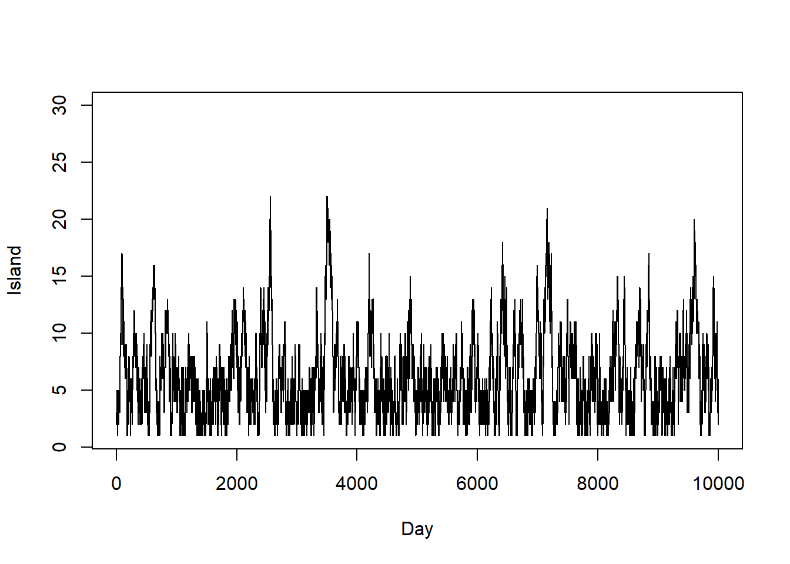
# simulated relative frequencies
plot(table(theta_sim) / n_steps, xlab = "Island", ylab = "Proportion of days")
# target distribution
points(theta, pi_theta / sum(pi_theta), type = "o", col = bayes_col["posterior"])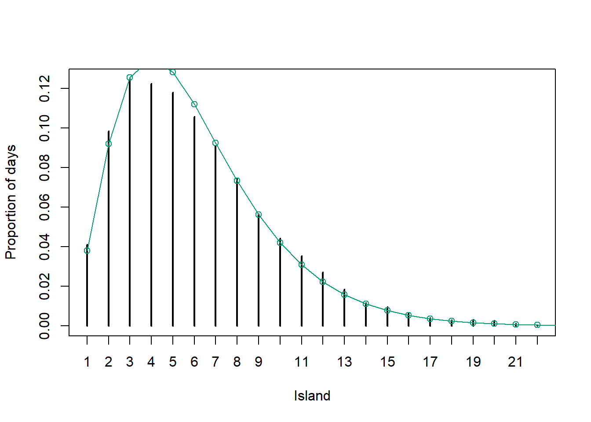
21.1.4 Beta-Binomial
n_steps = 10000
delta = 0.05
theta = rep(NA, n_steps)
theta[1] = 0.5 # initialize
# Posterior is proportional to prior * likelihood
pi_theta <- function(theta) {
if (theta > 0 & theta < 1) dbeta(theta, 1, 3) * dbinom(4, 25, theta) else 0
}
for (n in 2:n_steps){
current = theta[n - 1]
# propose next state from "jumping" distribution
proposed = current + rnorm(1, mean = 0, sd = delta)
# compute acceptance probability
accept = min(1, pi_theta(proposed) / pi_theta(current))
# simulate next state
theta[n] = sample(c(current, proposed), 1, prob = c(1 - accept, accept))
}
# display the first few steps
data.frame(step = 1:n_steps, theta) |> head(10) |> kbl() |> kable_styling() | step | theta |
|---|---|
| 1 | 0.5000000 |
| 2 | 0.4740012 |
| 3 | 0.4933635 |
| 4 | 0.4933635 |
| 5 | 0.4933635 |
| 6 | 0.4306592 |
| 7 | 0.4306592 |
| 8 | 0.4051433 |
| 9 | 0.3531094 |
| 10 | 0.4148967 |
# trace plot of first 100 steps
plot(1:100, theta[1:100], type = "o", xlab = "step",
ylab = "theta", main = "First 100 steps")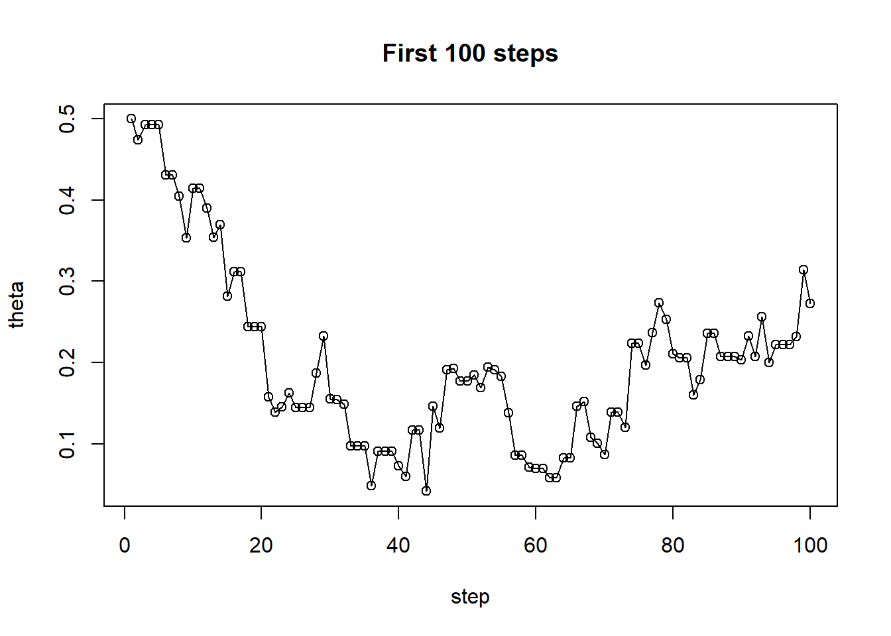
# trace plot
plot(1:n_steps, theta, type = "l", ylim = range(theta), xlab = "Step", ylab = "theta")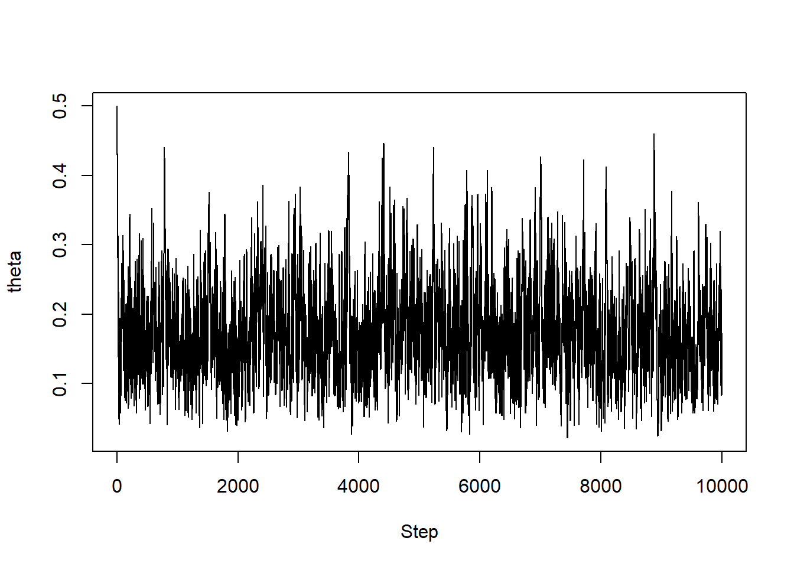
# simulated values of theta
hist(theta, breaks = 50, freq = FALSE,
xlab = "theta", ylab = "pi(theta|y = 4)", main = "Posterior Distribution")
# plot of theoretical posterior density of theta
x_plot= seq(0, 1, 0.0001)
lines(x_plot, dbeta(x_plot, 1 + 4, 3 + 25 - 4), col = bayes_col["posterior"], lwd = 2)
21.1.5 Multi-parameter
# posterior is proportion to product of prior and likelihood
pi_theta <- function(mu, p) {
if (mu > 0 & p > 0 & p < 1) {
dgamma(mu, 10, 2) * dbeta(p, 4, 6) * dpois(21, 2 * mu) * dbinom(10, 21, p)
} else {
0
}
}
pi_theta(7.5, 0.55) / pi_theta(8, 0.5)[1] 0.6818868n_steps = 11000
delta = c(0.4, 0.05) # mu, p
theta = data.frame(mu = rep(NA, n_steps),
p = rep(NA, n_steps))
theta[1, ] = c(10.5, 10 / 21) # initialize
for (n in 2:n_steps){
current = theta[n - 1, ]
# proposed next state
proposed = current + rnorm(2, mean = 0, sd = delta)
# compute acceptance probability
accept = min(1, pi_theta(proposed$mu, proposed$p) / pi_theta(current$mu, current$p))
# simulate next state
accept_ind = sample(0:1, 1, prob = c(1 - accept, accept))
theta[n, ] = proposed * accept_ind + current * (1 - accept_ind)
}
# display the first few steps
data.frame(step = 1:n_steps, theta) |> head(10) |> kbl() |> kable_styling() | step | mu | p |
|---|---|---|
| 1 | 10.500000 | 0.4761905 |
| 2 | 9.802563 | 0.4543025 |
| 3 | 9.930021 | 0.4281777 |
| 4 | 9.253191 | 0.5303964 |
| 5 | 9.345082 | 0.5308933 |
| 6 | 9.345082 | 0.5308933 |
| 7 | 9.289908 | 0.6120953 |
| 8 | 9.289908 | 0.6120953 |
| 9 | 9.240875 | 0.5915389 |
| 10 | 8.745342 | 0.5264620 |
# Trace plot of first 100 steps
ggplot(theta[1:100, ] %>%
mutate(label = 1:100),
aes(mu, p)) +
geom_path() +
geom_point(size = 2) +
geom_text(aes(label = label, x = mu + 0.1, y = p + 0.01)) +
labs(title = "Trace plot of first 100 steps")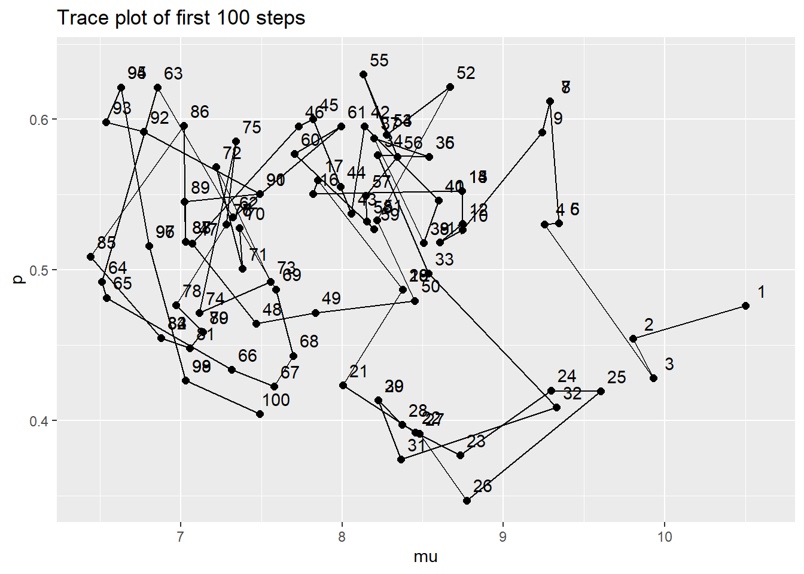
# Delete the first 1000 steps - we'll see why in the next chapter
theta = theta[-(1:1000), ]
ggplot(theta, aes(x = mu)) +
geom_histogram(aes(y=after_stat(density)), color = "black", fill = "white") +
geom_density(size = 1, color = bayes_col["posterior"])Warning: Using `size` aesthetic for lines was deprecated in ggplot2 3.4.0.
ℹ Please use `linewidth` instead.`stat_bin()` using `bins = 30`. Pick better value `binwidth`.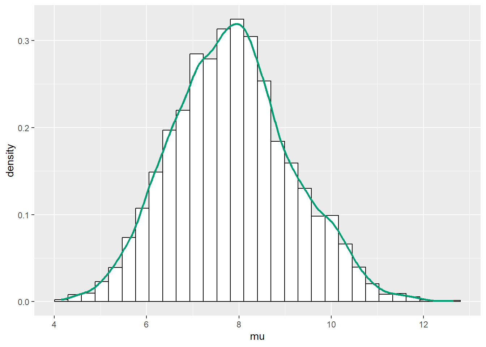
ggplot(theta, aes(x = p)) +
geom_histogram(aes(y=after_stat(density)), color = "black", fill = "white") +
geom_density(size = 1, color = bayes_col["posterior"])`stat_bin()` using `bins = 30`. Pick better value `binwidth`.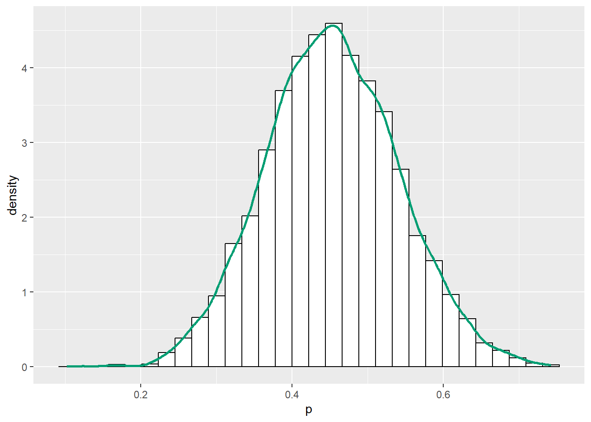
ggplot(theta, aes(mu, p)) +
geom_point(color = bayes_col["posterior"], alpha = 0.4) +
stat_ellipse(level = 0.98, color = "black", size = 2) +
stat_density_2d(color = "grey", size = 1) +
geom_abline(intercept = 0, slope = 1)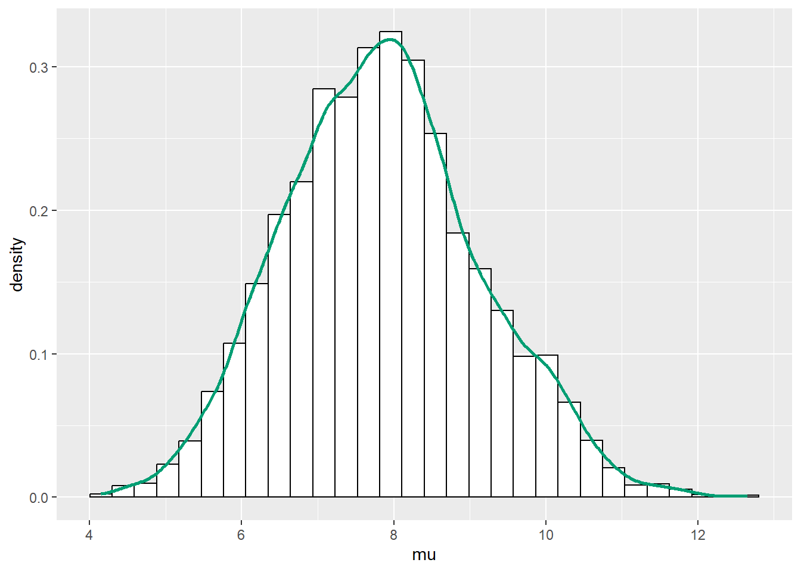
ggplot(theta, aes(mu, p)) +
stat_density_2d(aes(fill = ..level..),
geom = "polygon", color = "white") +
scale_fill_viridis_c() +
geom_abline(intercept = 0, slope = 1)Warning: The dot-dot notation (`..level..`) was deprecated in ggplot2 3.4.0.
ℹ Please use `after_stat(level)` instead.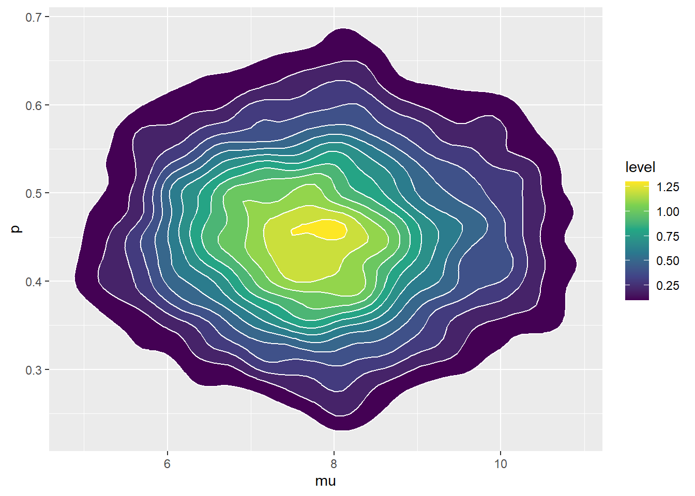
This island hopping example is inspired by Kruschke, Doing Bayesian Data Analysis.↩︎
The algorithm is named after Nicholas Metropolis, a physicist who led the research group which first proposed the method in the early 1950s (though Metropolis himself may have had little to do with the actual invention of the algorithm).↩︎